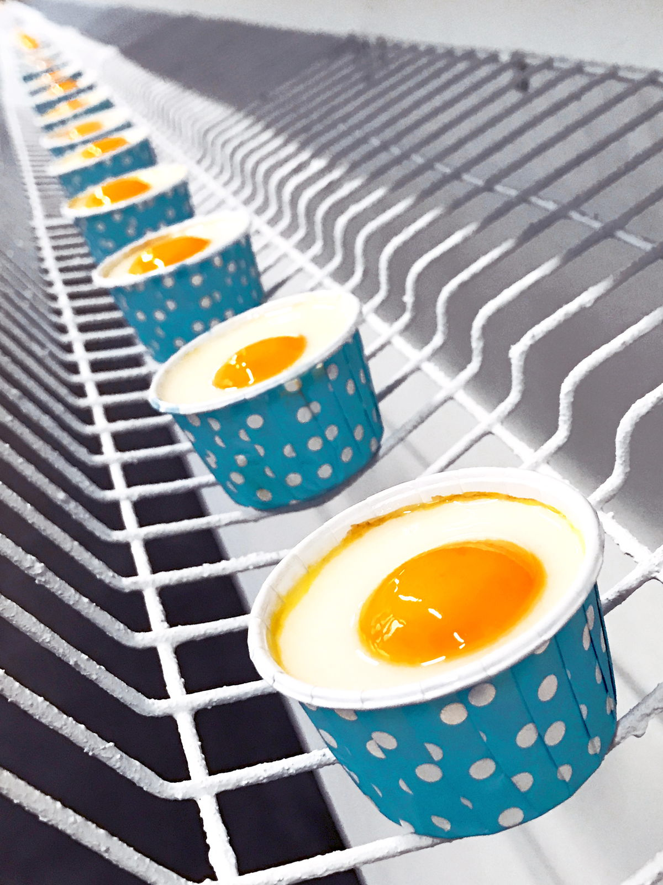
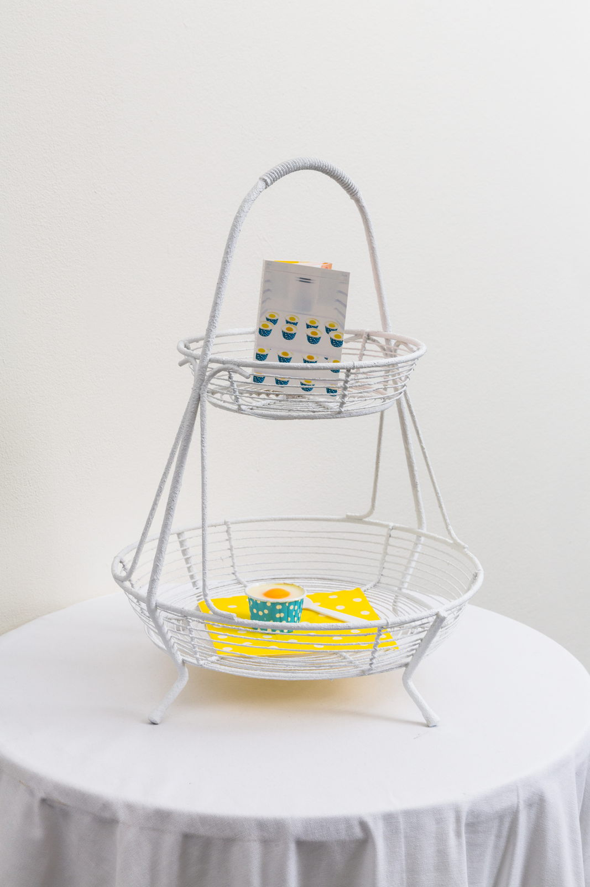
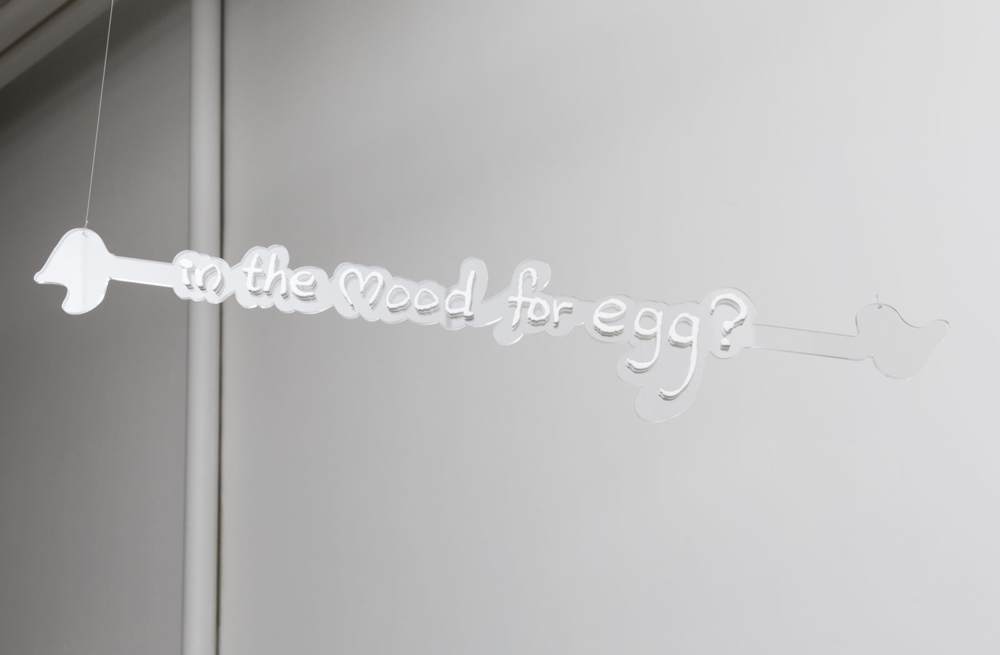

Inspired by the news about fake eggs in China and vegan eggs in the states, Julia presents her version of artificial eggs, both edible and non-edible, to showcase the era of artificial reality.
a world
in-between the real and the fake
separated from the origin
filled with stories
that sell
stories
that gain their existence
beyond stories
They might not be 100% real, but they are surely not fake - they are merely artificial.
Curator | Jeanne Graff